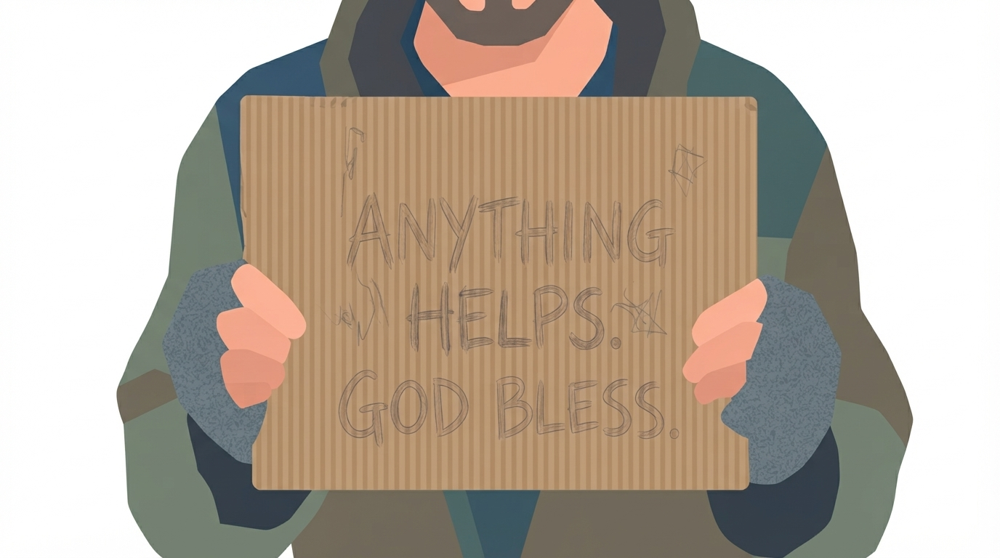
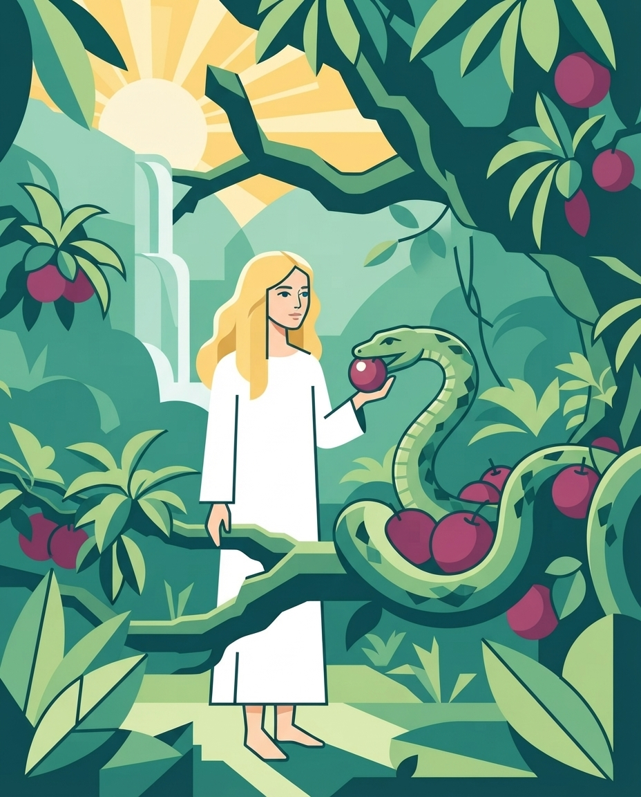
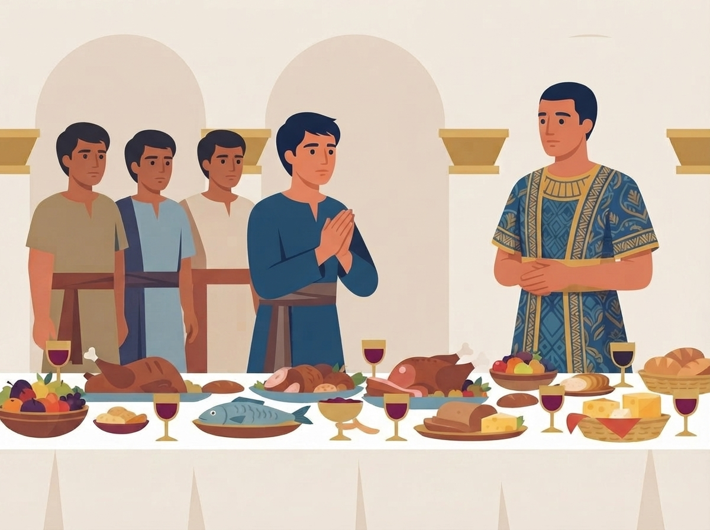
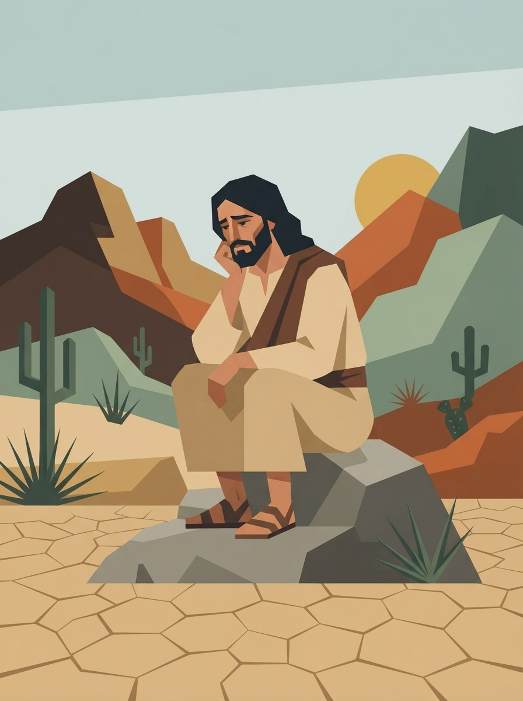

Hunger and Thirst
Matthew 5:6
6Blessed are those who hunger and thirst for righteousness, for they shall be filled.
Matthew 5:6
6Blessed are those who hunger and thirst for righteousness, for they shall be filled.

40Assuredly, I say to you, inasmuch as you did it to one of the least of these My brethren, you did it to Me.

6So when the woman saw that the tree was good for food, that it was pleasant to the eyes, and a tree desirable to make one wise, she took of its fruit and ate. She also gave to her husband with her, and he ate.

8But Daniel purposed in his heart that he would not defile himself with the portion of the king’s delicacies, nor with the wine which he drank; therefore he requested of the chief of the eunuchs that he might not defile himself.
12Please test your servants for ten days, and let them give us vegetables (pulse) to eat and water to drink.

1Then Jesus was led up by the Spirit into the wilderness to be tempted by the devil 2And when He had fasted forty days and forty nights, afterward He was hungry.
3Now when the tempter came to Him, he said, "If You are the Son of God, command that these stones become bread." 4But He answered and said, "It is written, 'Man shall not live by bread alone, but by every word that proceeds from the mouth of God.'"
"Satan sees the Lord’s servants burdened because of the spiritual darkness that enshrouds the people. He hears their earnest prayers for divine grace and power to break the spell of indifference, carelessness, and indolence. Then with renewed zeal he plies his arts. He tempts men to the indulgence of appetite or to some other form of self-gratification, and thus benumbs their sensibilities so that they fail to hear the very things which they most need to learn."
16Do you not know that you are the temple of God and that the Spirit of God dwells in you? 17If anyone defiles the temple of God, God will destroy him. For the temple of God is holy, which temple you are.
1I beseech you therefore, brethren, by the mercies of God, that you present your bodies a living sacrifice, holy, acceptable to God, which is your reasonable service. 2And do not be conformed to this world, but be transformed by the renewing of your mind, that you may prove what is that good and acceptable and perfect will of God.
35And Jesus said to them, “I am the bread of life. He who comes to Me shall never hunger, and he who believes in Me shall never thirst.”
"Those who have received instruction regarding the evils of the use of flesh foods, tea and coffee, and rich and unhealthful food preparations, and who are determined to make a covenant with God by sacrifice, will not continue to indulge their appetite for food that they know to be unhealthful. God demands that the appetites be cleansed, and that self-denial be practiced... This is a work that will have to be done before His people can stand before Him a perfected people."
13Then one of the elders answered, saying to me, "Who are these arrayed in white robes, and where did they come from?" 14And I said to him, "Sir, you know." So he said to me, "These are the ones who come out of the great tribulation, and washed their robes and made them white in the blood of the Lamb."
15Therefore they are before the throne of God, and serve Him day and night in His temple. And He who sits on the throne will dwell among them. 16They shall neither hunger anymore nor thirst anymore; the sun shall not strike them, nor any heat; 17for the Lamb who is in the midst of the throne will shepherd them and lead them to living fountains of waters. And God will wipe away every tear from their eyes.